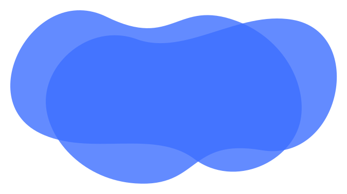

<h1 [@openClose]="isOpen ? 'open3' : 'closed2'" >ŠportApka</h1>
<div class="login-wrap">
    <span [@openClose]="isOpen ? 'open' : 'closed'" ><ion-icon (click)="facebookLogin()" name="logo-facebook"></ion-icon></span>
    <span [@openClose]="isOpen ? 'open1' : 'closed'"><ion-icon name="logo-google"></ion-icon></span>
</div>

